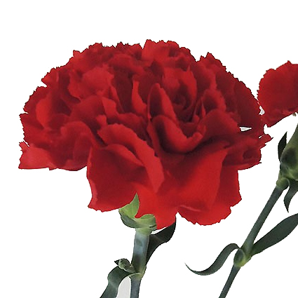
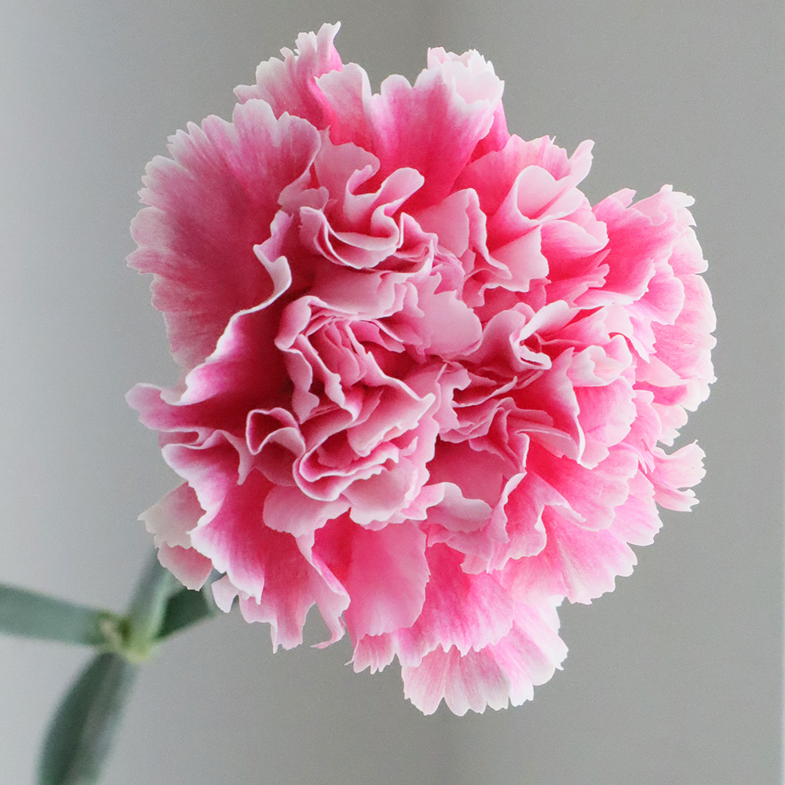
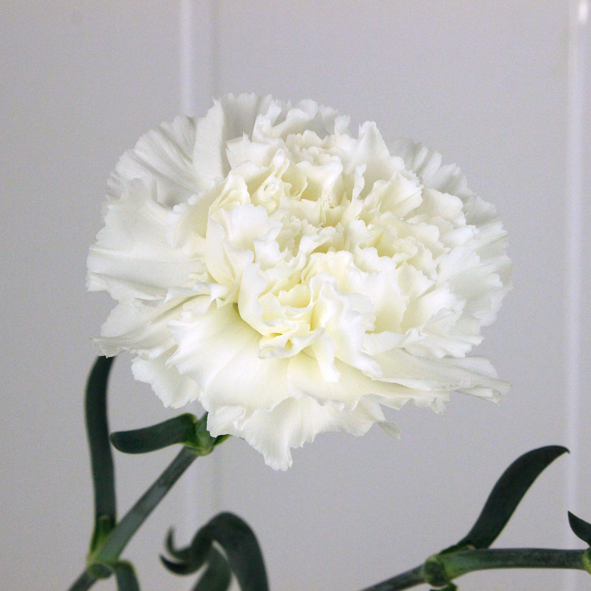
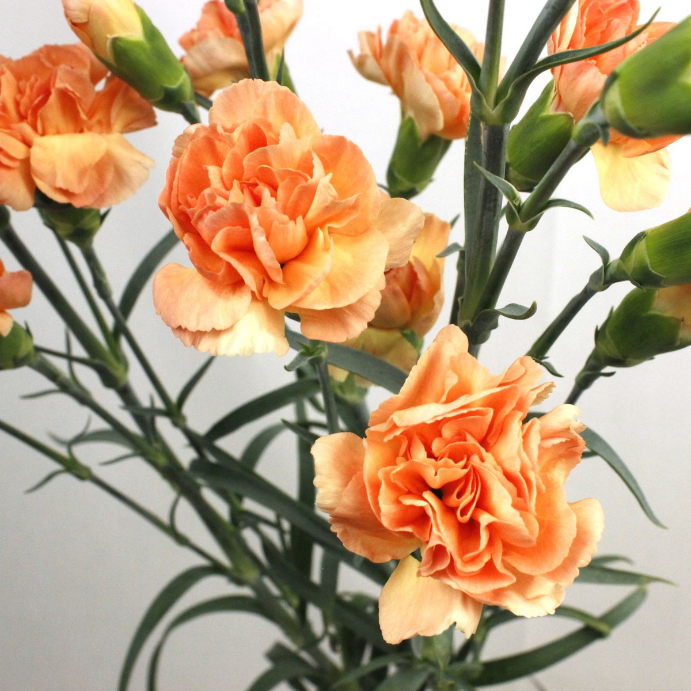
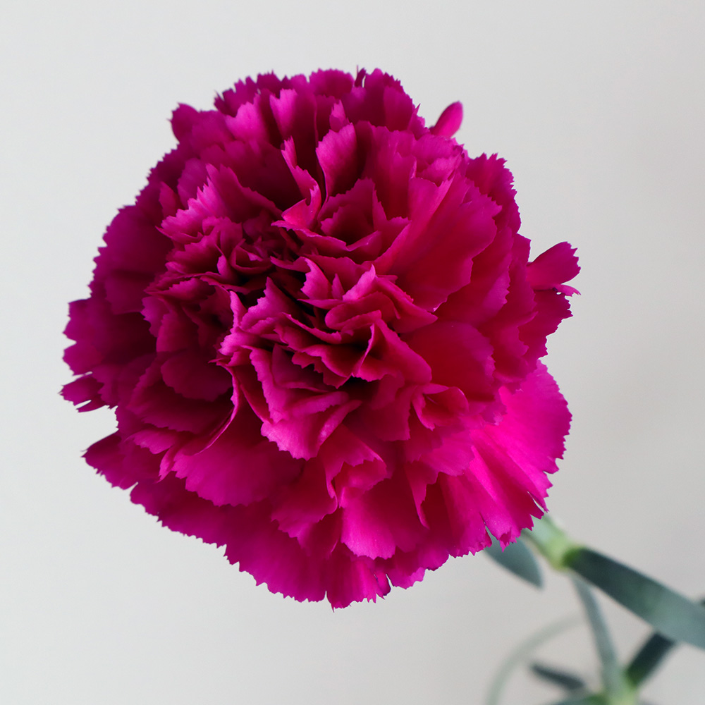
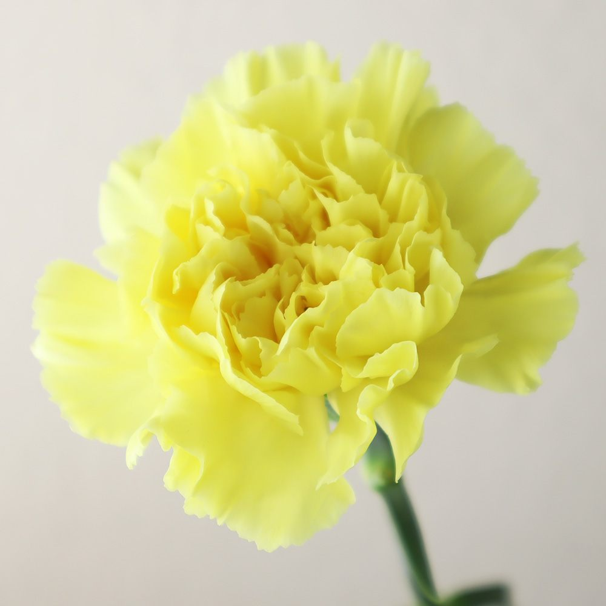

ナデシコ科ナデシコ属に属する多年草で、
一輪咲きからスプレー咲きと種類も豊富で色のバリエーションも幅広く、
母の日の花として有名です。
カーネーションの花全体の花言葉は「無垢で深い愛」です。
さらにカーネーションは品種により様々な色があり、色別に異なる花言葉を持ちます。

エクセリア
赤
母への愛・深い愛情・情熱

ソフィアローズ
ピンク
気品・感謝・暖かい心

モンブラン
白
純粋な愛・尊敬・亡き母を偲ぶ

オレンジレンジ
オレンジ
強烈な愛・純粋な愛

キプリング
紫
気品・誇り・高貴

イエローパレオ
黄色
友情・美・嫉妬・軽蔑
日本の母の日は、毎年「5月の第2日曜日」。この由来はアメリカから伝わりました。
1907年5月12日、アンナ・ジャービスが亡き母を偲び、母が教師をしていた教会に、
母が好きだった白いカーネーションを祭壇に飾りました。
これに感動した人々が、その翌年の1908年5月10日、同じ教会で、470人の生徒と母親達が「母の日」として祝いました。
アンナはこのときの参加者全員に同じく白いカーネーションを手渡しました。
これにより、白いカーネーションが母の日のシンボルとなり、1914年にアメリカが5月の第2日曜日を「母の日」として記念日に定めました。
この時アンナが提唱したのが、「亡き母には白いカーネーションを、健在の母には赤いカーネーションを贈る」
という慣習でした。これにより、カーネーションは母への深い愛情と感謝を伝える存在へとなりました。